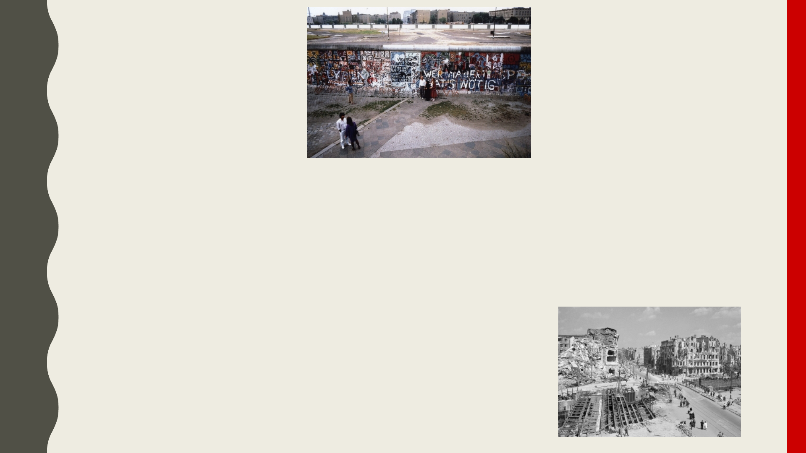

HISTORIE
• Gründung: Berlin wurdeim 13. Jahrhundertgegrundert, alszwei Städtehat fusioniert:
Berlin und Cölln
• WichtigeMomente: Zerstörungder Stadt im Zweite Weltkrieg,
Berliner Mauer -Verteilungwährend des Kalten Krieg,
Deutsche Vereinigung im Jahr 1990
• Berliner Mauer: Im Jahr 1961 gebaut, und imJahr 1989 kapputt,
symbolisierte die Trennung zwischen Ost und West.